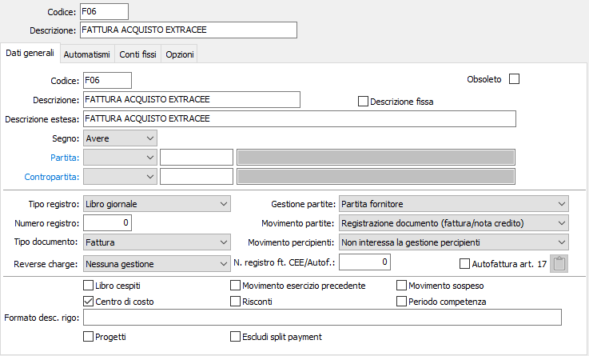
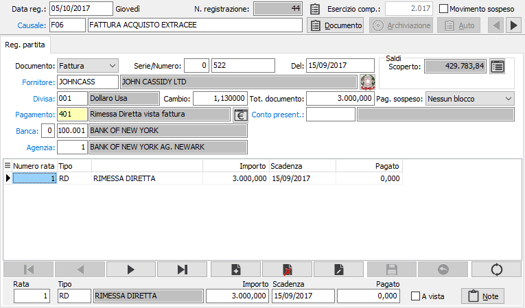
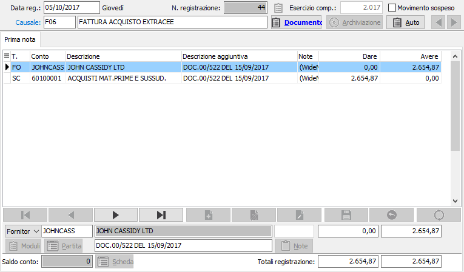

Registrazione acquisti extracomunitari
Registrazione di Fattura

Come è noto, le fatture di fornitori esteri extracomunitari per fornitura di merce hanno rilevanza ai soli fini contabili, perché sui registri Iva è prevista l'annotazione della relativa bolla doganale. Ai fini di bilancio fa tuttavia fede il controvalore della merce acquistata e non l'imponibile accertato dalla dogana. È quindi necessario procedere alla registrazione contabile e, nel caso, alla creazione della partita fornitore.
La causale contabile necessaria può quindi prevedere i flags di gestione della partita fornitori, ma non deve contenere richiami alle sezioni Iva delle registrazioni contabili. Se la causale prevede la gestione delle partite aperte, la registrazione inizia con la sezione video Registrazione partita, in cui devono essere fornite le indicazioni relative al documento.
Come sempre, le condizioni di pagamento vengono assunte automaticamente dall'anagrafica del fornitore, se presenti, con possibilità di modifica. In caso contrario, devono essere inserite a cura dell'utente.
Il totale della fattura deve essere inserito nella divisa originaria del documento stesso.
La sezione video Registrazione partita si presenta con l'aspetto illustrato di seguito.

Completata la sezione Registrazione partita, dal campo rata, premendo pagina giù, si passa alla Sezione video Prima Nota.
Benché la sezione precedente fosse stata compilata con importi in divisa estera, la sezione prima nota presenta gli importi in debitamente convertiti in divisa di conto, sulla base del cambio inserito.
Rispetto ad una fattura soggetta ad Iva, manca ovviamente il rigo del sottoconto Iva acquisti ed è possibile suddividere il costo su più conti, come già descritto in precedenza.

Registrazione di Note di credito
Anche le note di credito per acquisti extracomunitari riguardano esclusivamente la contabilità generale, perché l'imponibile Iva rimane quello accertato dalla Dogana all'atto dell'emissione della bolla doganale.
È richiesta una causale contabile simile a quella illustrata di seguito.
Come già per la registrazione della fattura di acquisto extracomunitaria, viene visualizzata per prima la finestra video Registrazione partita per consentire l'inserimento delle modalità di pagamento e dell'importo (in divisa del documento) del documento stesso.
Come per tutte le note di credito, nella finestra video Registrazione partita valgono le considerazioni già illustrate: all'atto della conferma del movimento, il programma effettua un controllo sulla tabella scadenze per il fornitore attivo, e se individua l'esistenza di partite aperte visualizza il messaggio relativo all'eventuale conferma di assegnazione della nota di credito ad una partita esistente.